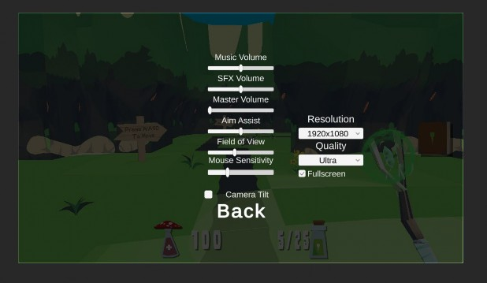
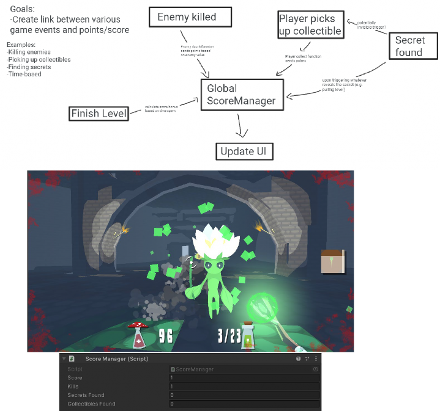
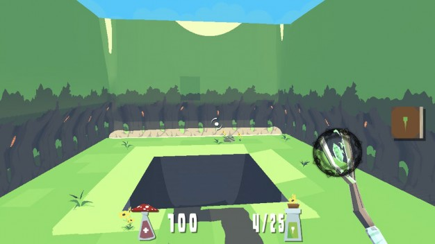

Bri Epstein (bdepst) Dev Blog 1: 10/17/21
Welcome to my first devblog! I want to figure out how to actually format things better on my website (not my forte), but for now it should at least be readable…

These past two weeks were the pre-alpha 1 sprint, so things have really just started to get into gear. Working on an already “completed” project from a previous semester, there were few immediate tasks to work on as a programmer. Thus, in the end I had to ask the lead for a new task to fill up my time commitment, but I‘ll get to that later.
The first main time investment was weekly meetings. We’ve had a couple weekly meetings which involved tasks such as playtesting and generating ideas for improvement and discussing plans for the designs and what to work on for the week. For example, there was a large discussion about damage fall-off and how it would work and how it should be implemented. Additionally, we talked about issues we faced navigating the old codebase with fresh eyes that weren’t familiar with it. For example, there’s some legacy code that isn’t used anywhere. All in all, these meetings took up 4 hours these past two weeks.
Next, I had honestly never played Doom before. Thus, I spent a large chunk of time these past two weeks conducting research. I did this by playtesting games such as Doom (the original), Quake, and Doom (2016). While playing, I paid attention to aspects such as enemy variety, weapon variety, reloading, movement, etc. – all things that are crucial to the game, but that you might not look at with an analytic eye in a normal playthrough. When waiting for tasks I would spend more time on this, so I ended up spending 6.5 hours on researching these games. I wanted to get a better idea of the genre, as I was only used to multiplayer FPS games
previously, and pay attention to any possible ideas for improvement to match what made them so good.
For my first actual “coding” task, I worked on going through the UI code to update the scripts to conform to the style guide, adding comments and headers along the way. It took me some time to actually understand lots of what I was going through and how the different scripts fit together to be able to annotate it, so this ended up taking me about 1 hour.

After that, I worked on the graphics settings. The main menu and real game levels had their menus implemented in different ways, so I had to work to get the graphics settings displaying properly in a couple different situations. Additionally, I was having issues with the UI canvas, which led to the graphics settings disappearing on certain resolutions. There were also issues getting the settings to properly stay between scenes, and to have the selections in the options menu always properly reflect the actual settings. I was able to solve these problems, but this ended up taking 2 hours, which was longer than I had originally planned.


Finally, I worked on adding reloading functionality to the game. In the original build, all the weapons had a single ammo counter, as opposed to most shooting games where weapons have separate clip and total ammo counters. The actual functionality honestly probably didn’t take me too long, but I ran into many “side” issues along the way. The codebase is so extensive and spread out that it took me awhile to figure everything out. For example, there are multiple UI manager scripts, so it took me some time to figure out how to get my new clip/ammo counters to display properly in every location. Additionally, the starter weapon and the picked up weapons are initialized in different places in the code, so I had to tackle further issues with having every weapon start out with full clips and ammo reserves I also tried to make the system as flexible as possible – the designers are able to edit the max clip size and the reload time for each individual weapon. Each weapon can also be edited to either use clips or not, so I ran into certain issues where I didn’t take one of those cases into account, so for example I had a bug where non-clip-using weapons couldn’t fire at all. Additionally, I added a tentative “reload color” variable, to have a quick visual indicator for the reload while there’s no dedicated animation. For now, I made it so that during the reload the rune indicator turns black, as otherwise with no visual cue it’s unclear what’s happening during the reload if the player is
clicking but is unable to shoot for a moment. I had thought ahead to prevent some bugs, but ran into others along the way. For example, switching between two weapons while reloading should cancel the first’s reload, but if you were to switch quickly enough, the reload would complete successfully because had I used a WaitForSeconds() in a coroutine before checking the original weapon index against the current one. Thus, I had to instead use a boolean to keep track of whether a switch has occurred since the start of the last reload. In the end, my work on the reload functionality totaled about 6.5 hours. It’s mostly done but there are probably a few things here and there I can improve upon still. I wanted to add an easy way to drop in reload sound effects to be played, but I’m unfamiliar with Wwise so I need to do some more research on that.
For the next sprint, I want to be able to put more hours towards the playtesting sessions of Bloom. I couldn’t make them these past two weeks, but, while I think the research I conducted was helpful, I think seeing people play the game I’m actually working on would provide even more useful information.
Time investment:
Meetings | 4 hrs |
Research | 6.5 hrs |
UI code commenting/style updates | 1 hr |
Graphics Settings | 2 hrs |
Score Systems | 4 hrs |
Reloading | 6.5 hrs |
Total | 24 hrs |